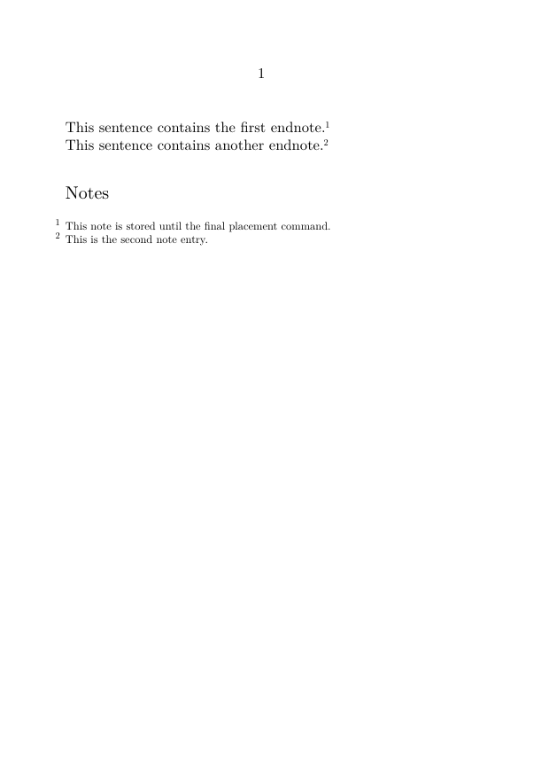
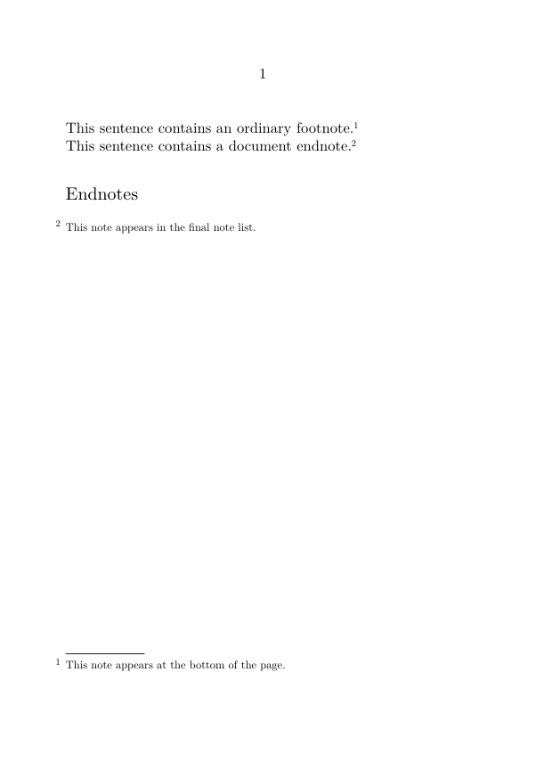
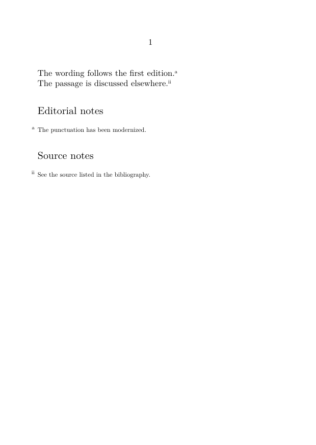
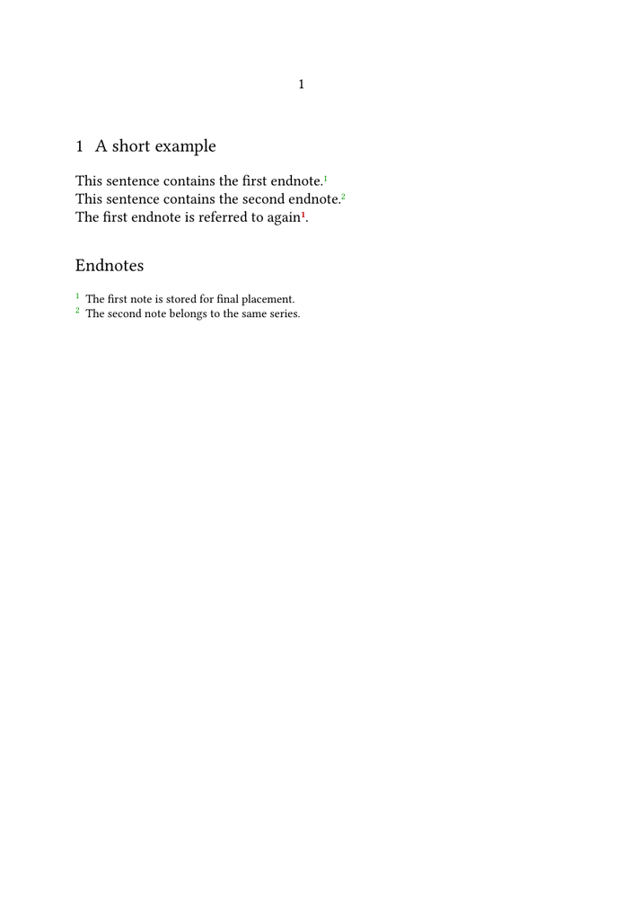

Notes in ConTeXt · Overview · Footnotes · Endnotes · Margin notes · Critical apparatuses
🚧 Documentation under construction — This page and its subpages are currently being revised. Contributions are welcome: feel free to edit and improve them.
Contents
- 1 1. Purpose
- 2 2. What counts as an endnote
- 3 3. Footnotes and endnotes
- 4 4. Basic document endnotes
- 5 5. Place endnotes after a chapter
- 6 6. Place endnotes after a section
- 7 7. Create a dedicated endnote series
- 8 8. Use several endnote series
- 9 9. Numbering endnotes
- 10 10. Restart numbering by chapter or section
- 11 11. Give the endnote section a heading
- 12 12. Avoid empty endnote headings
- 13 13. Reuse an endnote mark
- 14 14. Separate an endnote mark from its text
- 15 15. Format endnotes
- 16 16. Endnotes in paragraph form
- 17 17. Interactive endnotes
- 18 18. Endnotes in selective editions
- 19 19. Endnotes and local notes
- 20 20. Endnotes and critical apparatuses
- 21 21. Common mistakes
- 22 22. Diagnostic checklist
- 23 23. Complete example
- 24 24. What this page has established
- 25 25. Related pages
1. Purpose
Endnotes are notes whose entries are printed after the main text or after a major structural division rather than at the bottom of the page.
In ConTeXt, an endnote is usually not a fundamentally different kind of note. It is most often an ordinary or custom note series whose entries are:
- created in the running text;
- stored instead of being placed automatically;
- printed later with an explicit placement command.
Central principle
An endnote is defined primarily by its final placement, not by a special note command.
2. What counts as an endnote
The term endnote may refer to several editorial arrangements:
| Type | Final location |
|---|---|
| Section endnote | At the end of each section |
| Chapter endnote | At the end of each chapter |
| Part endnote | At the end of each part |
| Document endnote | At the end of the complete document |
| Separate endnote series | In several distinct final note lists |
These arrangements use the same general mechanism but differ in where the placement command is issued.
3. Footnotes and endnotes
A footnote is normally placed automatically at the bottom of the page.
An endnote is created in the running text but placed later.
| Feature | Footnote | Endnote |
|---|---|---|
| Entry placement | Bottom of the page | End of a section, chapter, part, or document |
| Placement | Usually automatic | Usually explicit |
| Typical setup | location=page
|
location=text
|
| Placement command | Usually unnecessary | \placefootnotes or \placenotes[series]
|
Terminological caution
A note created with \footnote may still become an endnote if its entry is postponed and placed later.
4. Basic document endnotes
The simplest method is to postpone ordinary footnotes:
\setupnote [footnote] [location=text]
Then place them at the end of the document:
\subject{Notes}
\placefootnotes
4.1. Minimal working example
-
\setuppapersize[A6] \setupnote [footnote] [location=text] \starttext This sentence contains the first endnote.% \footnote{This note is stored until the final placement command.} This sentence contains another endnote.% \footnote{This is the second note entry.} \subject{Notes} \placefootnotes \stoptext
-

Result
The note marks remain in the running text, while the note entries are collected and printed under the final heading.
5. Place endnotes after a chapter
The same postponed-note mechanism can be used after each chapter.
\setupnote [footnote] [location=text]
Then place the notes at the chosen point:
\chapter{First chapter}
Text with notes.
\subject{Notes to this chapter}
\placefootnotes
For automatic placement after each structural unit, use a setup attached to the relevant heading.
See:
Place footnotes at the end of a section or chapter.
6. Place endnotes after a section
Section endnotes use the same principle:
\section{A section}
Text with notes.
\subject{Notes to this section}
\placefootnotes
One mechanism, several outcomes
The difference between section endnotes, chapter endnotes, and document endnotes is determined by the location of \placefootnotes.
7. Create a dedicated endnote series
A separate note series is useful when ordinary footnotes must remain at the bottom of the page while another category of notes is collected at the end.
7.1. Define the series
\definenote [Endnote] [footnote]
7.2. Postpone its entries
\setupnote [Endnote] [location=text]
7.3. Place the series
\placenotes[Endnote]
7.4. Example
-
\setuppapersize[A6] \definenote [Endnote] [footnote] \setupnote [Endnote] [location=text] \starttext This sentence contains an ordinary footnote.% \footnote{This note appears at the bottom of the page.} This sentence contains a document endnote.% \Endnote{This note appears in the final note list.} \subject{Endnotes} \placenotes[Endnote] \stoptext
-

Use a dedicated series when
ordinary footnotes and endnotes must coexist in the same document.
8. Use several endnote series
A scholarly document may require several final note lists.
For example:
\definenote [EdNote] [footnote] \definenote [SourceNote] [footnote]
Postpone both:
\setupnote [EdNote] [location=text] \setupnote [SourceNote] [location=text]
Place them separately:
\subject{Editorial notes}
\placenotes[EdNote]
\subject{Source notes}
\placenotes[SourceNote]
8.1. Example
-
\setuppapersize[A6] \definenote [EdNote] [footnote] \definenote [SourceNote] [footnote] \setupnote [EdNote] [location=text] \setupnote [SourceNote] [location=text] \setupnotation [EdNote] [numberconversion=characters] \setupnotation [SourceNote] [numberconversion=romannumerals] \starttext The wording follows the first edition.% \EdNote{The punctuation has been modernized.} The passage is discussed elsewhere.% \SourceNote{See the source listed in the bibliography.} \subject{Editorial notes} \placenotes[EdNote] \subject{Source notes} \placenotes[SourceNote] \stoptext
-

9. Numbering endnotes
Numbering is configured with \setupnotation.
For Arabic numerals:
\setupnotation [Endnote] [numberconversion=numbers]
For lowercase letters:
\setupnotation [Endnote] [numberconversion=characters]
For Roman numerals:
\setupnotation [Endnote] [numberconversion=romannumerals]
See also:
Footnote reference: number conversions.
10. Restart numbering by chapter or section
A note counter may restart at a structural level.
For example:
\setupnotation [Endnote] [way=bychapter]
or:
\setupnotation [Endnote] [way=bysection]
Choose the reset level carefully
A document-wide endnote list usually benefits from continuous numbering. Chapter endnotes may be clearer when numbering restarts in each chapter.
11. Give the endnote section a heading
The placement command does not necessarily create a heading.
Add one explicitly:
\subject{Notes}
\placefootnotes
or:
\chapter{Endnotes}
\placenotes[Endnote]
The appropriate heading level depends on the document structure.
Typical choices include:
-
\subjectfor an unnumbered local heading; -
\sectionfor a numbered section; -
\chapterfor a major final division; -
\titlefor a top-level unnumbered heading.
12. Avoid empty endnote headings
If a chapter or section contains no notes, an automatically generated heading may remain empty.
Potential problem
A heading such as “Notes” may be printed even when the corresponding note series contains no entries.
When automatic placement is used, test the series before printing its heading.
For a complete pattern, see:
Place footnotes at the end of a section or chapter.
13. Reuse an endnote mark
Assign a stable reference when the same note must be called more than once:
\Endnote[end:shared]
{This note applies to both passages.}
Then repeat its mark:
\note[Endnote][end:shared]
See:
Refer to a footnote more than once.
14. Separate an endnote mark from its text
For a custom endnote series:
\note[Endnote][end:manual]
\setnotetext
[Endnote]
[end:manual]
{The endnote entry is registered separately.}
See:
Separate a note mark from its text.
15. Format endnotes
Use \setupnote for series behaviour:
\setupnote [Endnote] [location=text, bodyfont=small, paragraph=no]
Use \setupnotation for numbering and entry layout:
\setupnotation [Endnote] [numberconversion=numbers, alternative=serried, width=broad, distance=.5em]
See:
16. Endnotes in paragraph form
Short endnotes may be composed as a running paragraph:
\setupnote [Endnote] [location=text, paragraph=yes] \setupnotation [Endnote] [alternative=serried, width=broad, distance=.5em, display=no]
Use paragraph form selectively
It is efficient for short entries but difficult to read when notes contain long quotations, lists, or several paragraphs.
17. Interactive endnotes
Interactive links are useful when marks and entries are far apart.
Enable interaction globally:
\setupinteraction [state=start]
Then enable it for the series:
\setupnotation [Endnote] [interaction=yes]
See:
Why interaction matters more for endnotes
The physical distance between the mark and entry is usually greater than with page footnotes, so clickable navigation becomes especially useful.
18. Endnotes in selective editions
A document may include endnotes in one edition and suppress them in another.
The most reliable method is to define semantic note commands and control them with conditionals.
See:
Produce annotated and unannotated versions.
19. Endnotes and local notes
Endnotes belong to a document-level or structural note stream.
Local notes belong to a temporary scope such as a table, figure, or box.
They should not be confused.
| Feature | Endnote | Local note |
|---|---|---|
| Scope | Document, part, chapter, or section | Table, float, box, or local structure |
| Placement | At a later structural endpoint | Inside the local scope |
| Typical command | \placefootnotes or \placenotes
|
\placelocalfootnotes or \placelocalnotes
|
See:
Use local notes in tables, floats, and boxes.
20. Endnotes and critical apparatuses
Endnotes are suitable for explanatory, bibliographical, editorial, or source notes collected at the end of a structural unit.
A critical apparatus usually requires a closer relationship between:
- the lemma;
- variant readings;
- witnesses;
- textual operations;
- multiple apparatus layers.
Do not force a critical apparatus into a generic endnote list
Use a dedicated apparatus structure when the notes encode systematic textual variation.
See:
21. Common mistakes
21.1. Forgetting the placement command
With:
location=text
the entries are stored but not printed automatically.
You must use:
\placefootnotes
or:
\placenotes[series]
21.2. Using the wrong placement command
For the predefined footnote series:
\placefootnotes
For a custom series:
\placenotes[Endnote]
21.3. Mixing series names
These do not refer to the same series:
Endnote endnote EndNote
Series names are case-sensitive.
21.4. Printing the same stored notes twice
Repeated placement commands may duplicate or otherwise disturb the intended output, depending on the note configuration.
Place each collected note block only where it is required.
21.5. Using a heading that is too high or too low
The note heading should match the structural level of the final placement.
21.6. Confusing postponed notes with suppressed notes
A postponed note exists and awaits placement.
A suppressed note is not created.
Most frequent error
The note marks appear in the text, but the final note entries are missing because no placement command was issued.
22. Diagnostic checklist
When endnotes do not appear as expected, check:
-
whether the series uses
location=text; - whether the correct series is being called;
- whether the placement command matches the series;
- whether the placement command occurs after the notes have been created;
- whether the heading is being printed even when the series is empty;
- whether numbering should be continuous or reset;
- whether the same note list is being placed more than once;
- whether interaction is enabled when navigation is required;
- whether local notes have accidentally been used instead of document-level notes.
23. Complete example
-
\setuppapersize[A5] \setupbodyfont [libertinus,10pt] \definenote [Endnote] [footnote] \setupnote [Endnote] [location=text, bodyfont=small, paragraph=no] \setupnotation [Endnote] [numberconversion=numbers, alternative=serried, width=broad, distance=.5em, interaction=yes] \setupinteraction [state=start] \starttext \section{A short example} This sentence contains the first endnote.% \Endnote[end:first] {The first note is stored for final placement.} This sentence contains the second endnote.% \Endnote {The second note belongs to the same series.} The first endnote is referred to again \note[Endnote][end:first]. \subject{Endnotes} \placenotes[Endnote] \stoptext
-

24. What this page has established
Endnotes in ConTeXt are normally created by separating note creation from note placement.
The essential workflow is:
define or select a note series
|
v
set location=text
|
v
create notes in the running text
|
v
place the stored entries later
The placement point determines whether the result is:
- a section-end note list;
- a chapter-end note list;
- a part-end note list;
- a document-end note list.
25. Related pages
- Footnotes
- Footnote tutorial
- Footnote how-to guides
- Place footnotes at the end of a section or chapter
- Define and manage multiple note series
- Create interactive footnotes
- Footnote reference
- Explanation of the note mechanism
- Glossary of note terminology
- Margin notes
- Building a critical apparatus with ConTeXt
Notes in ConTeXt · Overview · Footnotes · Endnotes · Margin notes · Critical apparatuses